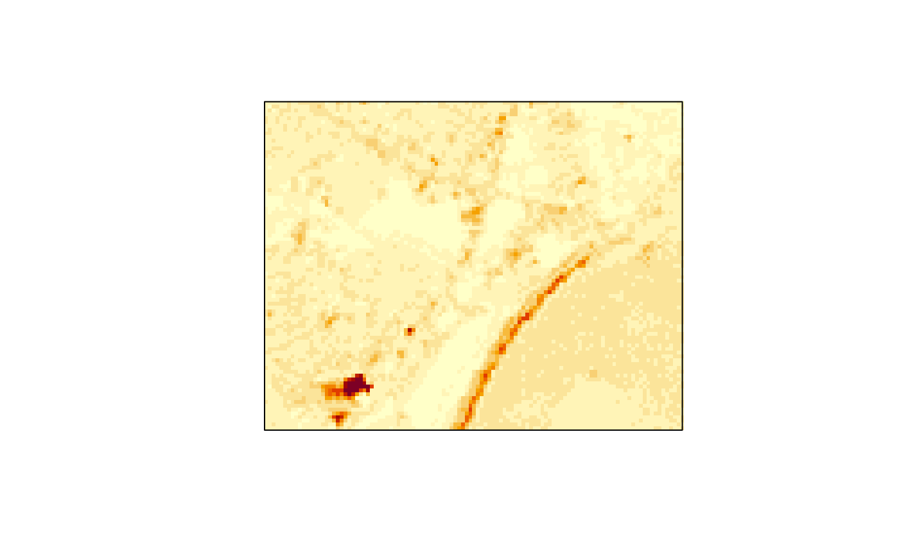
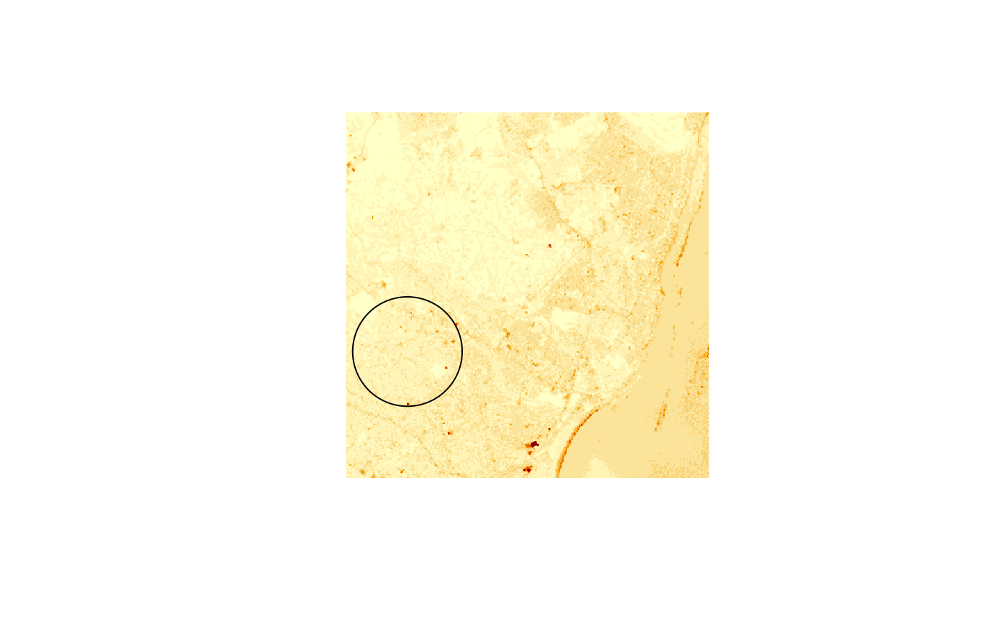

subset stars objects
# S3 method for stars [(x, i = TRUE, ..., drop = FALSE, crop = !is_curvilinear(x)) # S3 method for stars [(x, i) <- value
Arguments
| x | object of class |
|---|---|
| i | first selector: integer, logical or character vector indicating attributes to select, or object of class |
| ... | further (logical or integer vector) selectors, matched by order, to select on individual dimensions |
| drop | logical; if |
| crop | logical; if |
| value | array of dimensions equal to those in |
Details
if i is an object of class sf, sfc or bbox, the spatial subset covering this geometry is selected, possibly followed by cropping the extent. Array values for which the cell centre is not inside the geometry are assigned NA.
in an assignment (or replacement form, [<-), argument i needs to be a stars object with dimensions identical to x, and value will be recycled to the dimensions of the arrays in x.
Examples
tif = system.file("tif/L7_ETMs.tif", package = "stars") x = read_stars(tif) x[,,,1:3] # select bands#> stars object with 3 dimensions and 1 attribute #> attribute(s): #> L7_ETMs.tif #> Min. : 21.00 #> 1st Qu.: 58.00 #> Median : 70.00 #> Mean : 70.36 #> 3rd Qu.: 83.00 #> Max. :255.00 #> dimension(s): #> from to offset delta refsys point values #> x 1 349 288776 28.5 +proj=utm +zone=25 +south... FALSE NULL [x] #> y 1 352 9120761 -28.5 +proj=utm +zone=25 +south... FALSE NULL [y] #> band 1 3 NA NA NA NA NULLx[,1:100,100:200,] # select x and y by range#> stars object with 3 dimensions and 1 attribute #> attribute(s): #> L7_ETMs.tif #> Min. : 13.00 #> 1st Qu.: 54.00 #> Median : 65.00 #> Mean : 67.22 #> 3rd Qu.: 77.00 #> Max. :252.00 #> dimension(s): #> from to offset delta refsys point values #> x 1 100 288776 28.5 +proj=utm +zone=25 +south... FALSE NULL [x] #> y 100 200 9120761 -28.5 +proj=utm +zone=25 +south... FALSE NULL [y] #> band 1 6 NA NA NA NA NULLx["L7_ETMs.tif"] # select attribute#> stars object with 3 dimensions and 1 attribute #> attribute(s): #> L7_ETMs.tif #> Min. : 1.00 #> 1st Qu.: 54.00 #> Median : 69.00 #> Mean : 68.91 #> 3rd Qu.: 86.00 #> Max. :255.00 #> dimension(s): #> from to offset delta refsys point values #> x 1 349 288776 28.5 +proj=utm +zone=25 +south... FALSE NULL [x] #> y 1 352 9120761 -28.5 +proj=utm +zone=25 +south... FALSE NULL [y] #> band 1 6 NA NA NA NA NULLxy = structure(list(x = c(293253.999046018, 296400.196497684), y = c(9113801.64775462, 9111328.49619133)), .Names = c("x", "y")) pts = st_as_sf(data.frame(do.call(cbind, xy)), coords = c("x", "y"), crs = st_crs(x)) image(x, axes = TRUE)bb = st_bbox(pts) (xx = x[bb])#> stars object with 3 dimensions and 1 attribute #> attribute(s): #> L7_ETMs.tif #> Min. : 3.00 #> 1st Qu.: 56.00 #> Median : 73.00 #> Mean : 70.87 #> 3rd Qu.: 89.00 #> Max. :255.00 #> dimension(s): #> from to offset delta refsys point values #> x 158 268 288776 28.5 +proj=utm +zone=25 +south... FALSE NULL [x] #> y 245 331 9120761 -28.5 +proj=utm +zone=25 +south... FALSE NULL [y] #> band 1 6 NA NA NA NA NULLimage(xx)image(x)pt = st_point(c(x = 290462.103109179, y = 9114202.32594085)) buf = st_buffer(st_sfc(pt, crs = st_crs(x)), 1500) plot(buf, add = TRUE)buf = st_sfc(st_polygon(list(st_buffer(pt, 1500)[[1]], st_buffer(pt, 1000)[[1]])), crs = st_crs(x)) image(x[buf])